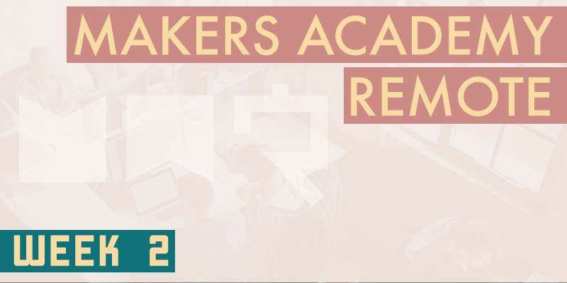

During week 1 I realised that I was pushing myself too hard, working until I practically fell asleep each night. It seems that many others in my cohort were feeling the same way, so as a result this week the pair coding has generally been finished by around 6pm each day. After a break for dinner I've been getting on with some self-directed study until around 11pm, in the form of catching up with the large backlog of bookmarked articles that I've already accumulated. I'm still working late each night, but self-directed reading is a lot less strenuous that pairing to solve a difficult challenge.
Code review
The week began with a peer code review of our weekend challenges. We were randomly assigned in to pairs, and Monday morning was set aside to thoroughly review our partner's code against a checklist provided by Makers Academy. Once the reviews were complete any remaining time could be spent implementing changes suggested by the code review. The supplied checklist was an excellent resource, because it forced us to scrutinise the code in more detail than we naturally would, and to check that very specific practices were adhered to, which very often at this early stage they're not. There's a useful feature of GitHub that allows us to add comments to somebody else's code, so that we can be very specific in pointing out areas that require attention. My partner and I began by taking turns to demonstrate how our solution worked. I was very impressed with how thoroughly my partner tried to break my code by throwing as many edge cases as he could think of at it. This was a bit nerve-wracking because on a few occasions I wasn't entirely sure how my code would hold up against such a heavy bombardment, but thankfully it came out unscathed. When the tables turned and it was my chance to try to break my partner's code. I obliged as best I could, and it was a great learning process for me to be able to assess somebody else's code. I really appreciated having somebody look over my code with such a critical eye, and having the chance to provide feedback for somebody who was keen to receive it.
SOLID principles
The main workload for this week was of a similar nature to that of week 1, this time to build a command line version of London's Oyster Card transport system, with an emphasis on the SOLID principles of Object Oriented Programming. It transpires that much of the OOP code that we wrote last week violated several best practices, but that didn't matter at the time because it was useful to see how things are done the wrong way before you can appreciate seeing them done the right way.
- The Single responsibility principle insists that every method or class should have only a single responsibility, and that any additional responsibilities should be extracted out to their own individual methods or classes. While this can make for very verbose code, the result should be easier to understand, maintain, and more logical to extend or modify in the future.
- The Open/closed principle insists that our code should be open for extension but closed for modification. This means that our code should be of a modular design that allows for behavioural changes to be implemented by simply extending existing classes, rather than having to modify them.
- The Liskov substitution principle is something that we haven't covered yet. Our coach Sam tells us that even with seven year's experience as a senior developer he's only ever encountered it once, so it's on the back burner for now. As I understand it from the little research I've done, it states that an instance of a parent class should be able to be replaced by instances of it's children without causing problems. I'm sure I'll form a better understanding of this in the future.
- The Interface segregation principle is something that isn't relevant to Ruby because Ruby is a duck typed language, meaning that it's less concerned with the type of an object and more concerned with which methods that object responds to. However the interface segregation principle relates to methods being able to take arguments of various types and deciding how to deal with them, rather than insisting on only accepting arguments of a particular type. It will be interesting to learn more about this when needed, but while we're purely Rubyists it can remain on the back burner.
- The Dependency inversion principle feels a little abstract to me right now, but essentially is states that high level logic should not be dependent upon low level logic. This would mean that the low level logic could be altered without worrying about causing problems for the high level logic.
Of the SOLID principles it's been the single responsibility principle that I've adhered to the most this week, probably because it's quite easy to understand and implement at this early stage.
Hosting my own stand-up
Also of note this week, I lead my first group stand-up meeting. Initially Sam would lead these, but he's been gradually taking a less active role each day until finally he stopped attending completely to leave us students to run our own stand-ups, forcing us to learn to self-manage as a group. During each stand-up one person has to opt to lead, while another must opt to scribe, or take notes. Taking the lead role for the first time completely changed how I experienced a stand-up meeting, because it took me from being in a relatively passive role to an incredibly active participant. I wasn't the first to lead a stand-up, and of the students who've lead before me I've seen some very active leaders and also some very hands-off leaders. I wanted to be as useful as I could be to the rest of my group, I listened intently to each person's points and made sure to (at least try to) offer some constructive feedback to each. Not only did I personally get much more satisfaction than usual from that stand-up, but it left me with a spring in my step that lasted the whole day.
Takeaway restaurant
The weekend challenge tasked us with creating a command line version of a takeaway restaurant. This tested our newfound knowledge of OOP best practices, so rather than simply trying to create a working system as we did last week, a large part of how well our code would fare the peer review would rest upon how well we'd adhered to the SOLID principles. The takeaway challenge was also made more interesting by the need to use the Twilio API to send a text message as an order confirmation. The thrill we all received from having a piece of Ruby code that we'd written on our local machines actually send a text message to our phones led to a conversation that lit up our Slack channel that day. It was also suggested that we use the dotenv Ruby Gem to store sensitive information such as phone numbers and Twilio account details as environment variables on our local machines, rather than pushing those details to GitHub as part of the code base. With time being an issue I was unsure whether I'd manage to have dotenv implemented over the weekend, but thankfully it turned out to be refreshingly simple to implement, and hugely important.
Week 2 has been awesome, not only the work but the lifestyle too. Our cohort has really begun to bond, and I can say that I'm already making some genuine friends that I hope I'll stay in contact with long after the course ends. Before starting Makers Academy I had concerns over how well we could integrate as a group when we're only ever communicating online, but I'm relieved to report that it's not difficult at all. It's so convenient to be able to call anyone online for a quick 1-on-1 or group chat that it's becoming common to simply call each other for a quick catch up in the evenings. While the on-site students can (and often do according to their Slack channel) go for a beer in order to get to know each other, us remote students are finding our own ways to build bonds, and I feel fortunate to be taking this journey with such a great group of people.